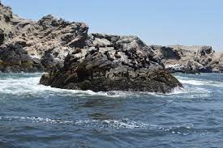

Considerada como una de las más pintorescas bahías del litoral peruano. La vista es notable desde la llamada Ventana de Paita ubicada sobre el tablazo que domina toda la ciudad. Su riqueza ictiológica es proverbial.
Ubicada a 22 Km. de Paita ( 13 Km. de carretera asfaltada, 9 Km. de carretera afirmada, luego hay que cruzar un canal de aproximadamente 1 milla de ancho ) Es una isla guanera llamada también de lobos por la gran presencia de lobos marinos. . 